| 1. 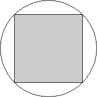 | 2. 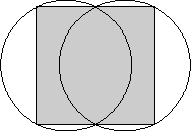 | 3. 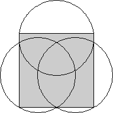 | ||
| s = √2 = 1.414+ Trivial. | s = 4 / √5 = 1.788+ Trivial. | s = 16 / √65 = 1.984+ Proved by Denes Nagy in 1974. |
| 4. 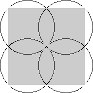 | 5. 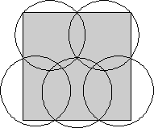 | 6. 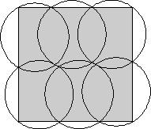 | ||
| s = 2√2 = 2.828+ Proved by Denes Nagy in 1974. | s = 3.065+ Proved by Hans Melissen in 1997. | s = 3.347+ Found by Hans Melissen in 1997. |
| 7. 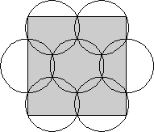 | 8. 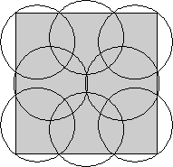 | 9. 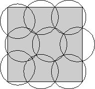 | ||
| s = 1 + √7 = 3.645+ Proved by Hans Melissen in 1997. | s = 3.841+ Found by Hans Melissen and P. Schuur in 1997. | s = 4.335+ Found by Kari Nurmela and Patric Östergård in 2000. |
| 10. 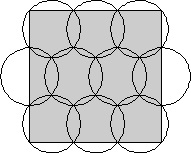 | 11. 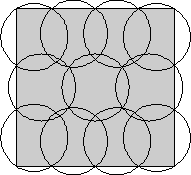 | 12. 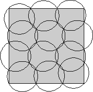 | ||
| s = (18 + 24√3) / 13 = 4.582+ Found by T. Tarnai and Z Gáspár in 1995. | s = 4.705+ Found by Hans Melissen and P. Schuur in 1997. | s = 4.943+ Found by Kari Nurmela and Patric Östergård in 2000. |